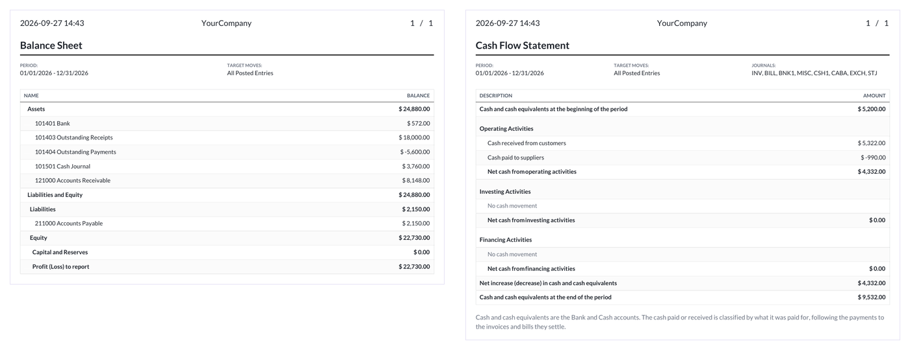
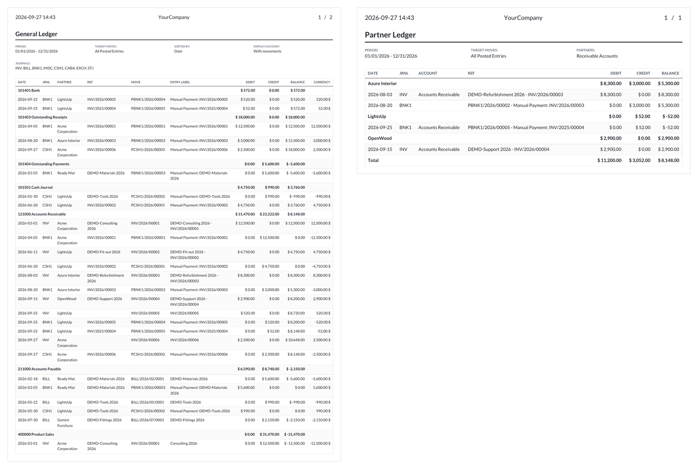
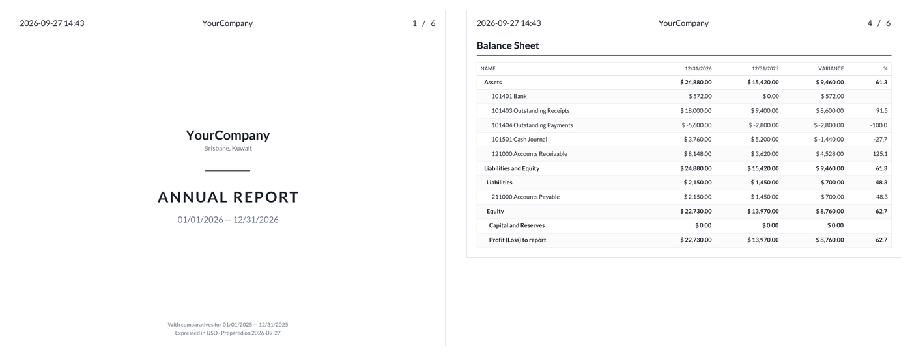
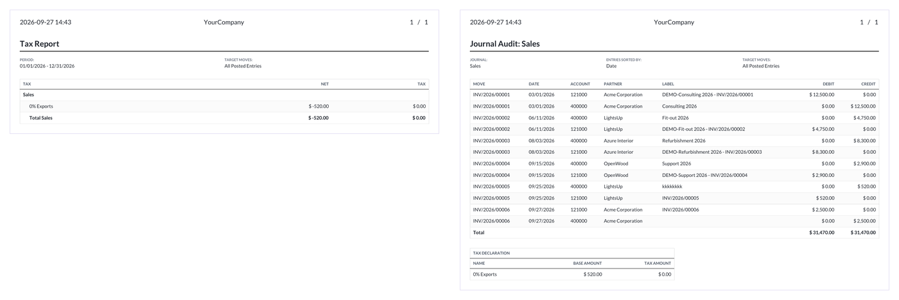

Interactive accounting reports and printable statements for Odoo 20 Community.




Requires the standard Odoo 20 accounting and mail addons. On-premise PDF rendering requires an Odoo-compatible wkhtmltopdf build with patched Qt.
Upstream contributors and license information are listed in this addon's manifest and source files.